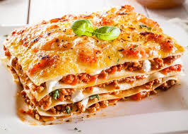

Cocinaland
La tierra prometida de las comidas
Favoritos



Lasagna con Salsa Bolognesa
Viernes 22 de Junio de 2018
La tradicional lasaña con carne boloñesa y salsa bechamel está llena de sabor, con deliciosas capas de carne y salsa que entre delgadas láminas de pasta y cubierta con queso que la hacen simplemente exquisita
Cazuela de Mariscos
Domingo 24 de Junio de 2018
Esta receta de cazuela de mariscos, tan típica de nuestras costas la puedes recrear ahora en tu casa, siguiendo estos pasos no fallarás y le encantará a tus comensales. La puedes servir con pan tostado como indica la receta, o con arroz de coco o yuca frita para una experiencia más colombiana, inclusive piensa reemplazar la crema de leche por suero costeño.